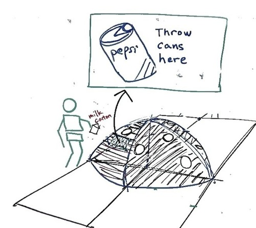
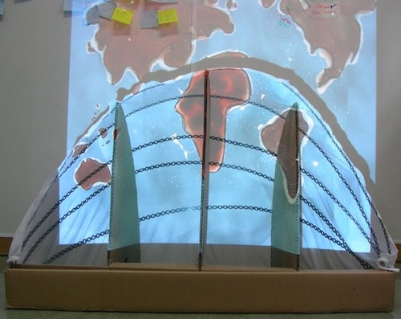

Kids Interact with Earth
This is a group design project, part of the Basic Interaction Design course. I did research, ideation, prototype implementation, and prototype testing. The project's objective is to change children's attitude by teaching them about the importance of segregating trash. The below video shows the construction and experience of the prototype.
Through the use of personas and storyboards, we came up with the idea of a globe in which children can throw trash. The experience starts with a sad globe, and when children throw trash in the correct section, earth becomes happier (and vice versa).
Children found the experience exciting and engaging. They grasped the significance of earth immediately and enjoyed the reward. The children interacting with the display can be viewed in the video above.
